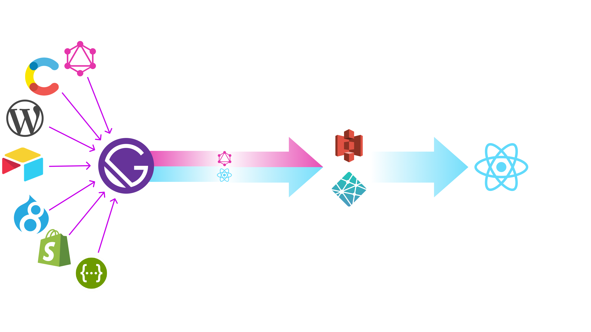

Pump up your site
Gatsby out of the box
by Anthony Carbajal
antoncarbaro@gmail.com
👋 Hola! Soy Anthony.
- Web UI Dev @ Globant.
- Gamer, Developer, Glober.
¿De qué hablaremos hoy?
- ¿Qué es Gatsby y por qué es importante?
- Fundamentos de Gatsby
¿Qué es Gatsby?
Gatsby es una herramienta,
(atajo) que permite a los
desarrolladores construir mágnificas apps y websites.
La mayoría de flujos de trabajo, involucran un
boilerplate al empezar el desarrollo.
Gatsby elimina la necesidad de los boilerplates al empezar
el desarrollo y también en el deploy de las apps a producción.
¿Qué es Gatsby?
Gatsby es un orchestration layer para
manipular el Content Mesh y su numerosas fuentes de data.
El CMS monolítico está muriendo.
El futuro del desarrollo web es el content mesh

¿Qué es Gatsby?
Gatsby es un
generador de Progressive Web App
diseñado para hacer las cosas de manera correcta y sencilla.